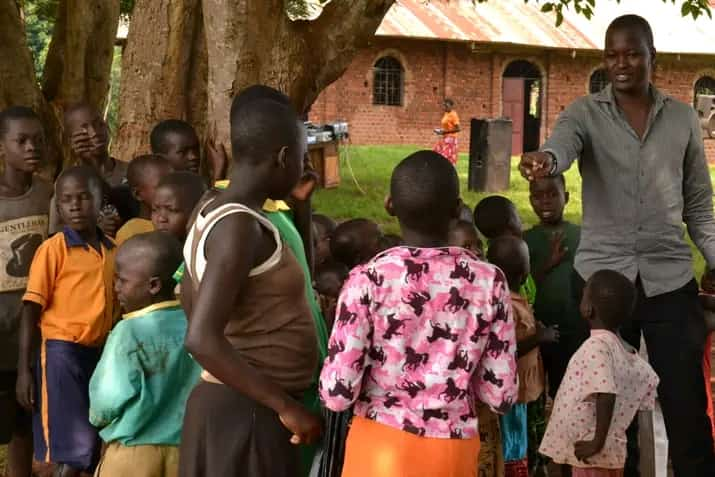

Schools We Built
"From foundations to futures—witness the power of education."
Education is the key to breaking the cycle of poverty. Through the generosity of our supporters, we have built schools that now serve as beacons of hope for hundreds of children. Browse through the images to see the transformation—empty fields turned into classrooms filled with eager young minds. Each school represents a promise: a brighter future for every child who walks through its doors.

Students in Action
"Learning, growing, and dreaming big."
Our students are the heart of our orphanage. Here, you’ll see them engaged in their daily studies, playing with friends, and participating in activities that nurture their skills and creativity. Every smile captured is a testament to the opportunities made possible through education and support.

Orphans Who Need Help
"Every child deserves love, care, and a chance to thrive."
In this section, you’ll find portraits of children who are still waiting for a helping hand. Each child has a unique story, filled with dreams and aspirations. With your support, we can provide them with food, shelter, education, and the love they deserve. Click on a child’s profile to learn more about their journey and how you can help change their life.


Be a Part of the Story
Your support makes all of this possible. Whether it’s building another school, providing educational resources, or sponsoring a child in need, every contribution brings hope to a young life.